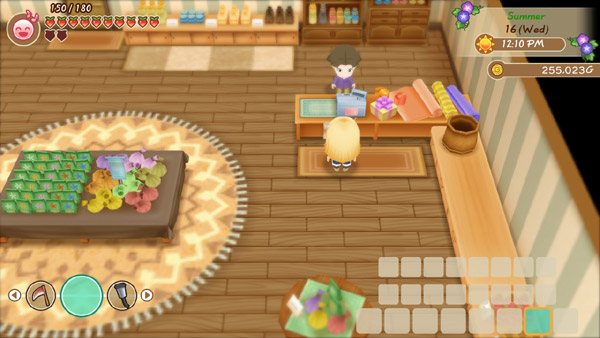

Tienda general de la ciudad Mineral



La tienda general es el lugar al que irás para comprar semillas, ingredientes para cocinar y diversos suministros que usarás en tu granja. Jeff se encarga de la tienda general desde detrás del mostrador, mientras que Sasha y Karen supervisan desde la trastienda. La tienda está abierta de 9:00 a 17:00 y cierra los martes y domingos.
El inventario de semillas de Jeff cambiará de una temporada a otra. Venderá las semillas de la temporada actual el primer día de la temporada. No hay semillas a la venta durante el invierno.
| Horas | 9:00 am - 5:00 pm. |
|---|---|
| Cerrado | Domingo, Martes y dias festivos. |
| Dirigido por |
|
Productos
Semillas de temporada
| Temporada | Nombre | Requisito | Costo |
|---|---|---|---|
| Semillas de nabo | — | 120 G | |
| Semillas de patata | — | 150 G | |
| Semillas de pepino | — | 200 G | |
| Semillas de fresa | Haber enviado 100 nabos, patatas y pepinos. | 150 G | |
| Semillas de forraje | — | 500 G |
| Temporada | Nombre | Requisito | Costo |
|---|---|---|---|
| Semillas de tomate | — | 200 G | |
| Semillas de maíz | — | 300 G | |
| Semillas de cebolla | — | 150 G | |
| Semillas de calabaza | Haber enviado 100 tomates, maíz y cebollas. | 500 G | |
| Semillas de forraje | — | 500 G |
| Temporada | Nombre | Requisito | Costo |
|---|---|---|---|
| Semillas de berenjena | — | 120 G | |
| Semillas de zanahoria | — | 300 G | |
| Semillas de boniato | — | 300 G | |
| Semillas de espinacas | Haber enviado 100 berenjena, tomate y boniato. | 200 G | |
| Semillas de flores dulces sol | Haber visto el evento Flor Preservada. | 1.000 G | |
| Semillas de Judía azuki | — | 300 G | |
| Semillas de chile | — | 300 G | |
| Flor preservada | Al menos 3 días después de ver el evento de Flor Preservada. | 1.000 G | |
| Semillas de forraje | — | 500 G |
Ingredientes de cocina
| Temporada | Nombre | Requisitos | Costo |
|---|---|---|---|
|
|
Onigiri | — | 100 G |
| Pan | — | 100 G | |
| Aceite | — | 50 G | |
| Harina de trigo | — | 50 G | |
| Polvo de curry | — | 50 G | |
| Polvo de dango | — | 100 G | |
| Chocolate | — | 100 G |
Otros
Nota: los objetos de esta lista solo se podran conseguir una vez, cuando se alla comprado ya no volveran a aparecer a esepcion de la pluma azul ya que para que vuelva salir la pluma azull primero deve divorciarse para poder casarse con otro candidato a matrimonio y cumplir con las condicione de dicho objeto.
| Nombre | Requisitos | Costo |
|---|---|---|
| Pluma azul | Has visto el evento del corazón naranja con un candidato a matrimonio normal o has alcanzado un color de corazón naranja invisible con un candidato a matrimonio especial | 1.000 G |
| Bolsa básica (16 espacios) | Comienzo del juego | 3.000 G |
| Bolsa grande (24 espacios) | 7 días después de comprar la Bolsa Básica | 5.000 G |
| Condimentos | Despues de conseguir la casa mediana | 2.500 G |
| Olla | 10 días después de comprar los condimentos | 1.000 G |
| Sartén | 10 días después de comprar la olla | 1.200 G |
| Cuchillo | 10 días después de comprar la Sartén | 1.500 G |
| Horno | 10 días después de comprar el Cuchillo/td> | 2.500 G |
| Rodillo | 10 días después de comprar el horno | 750 G |
| Batidora | 10 días después de comprar el rodillo | 1.200 G |
| Varilla de batir | 10 días después de comprar la Batidora | 500 G |
| Balla de poder | Después de comprar la cama grande y la alfombra | 10.000 G |
Envoltura de regalo
Junto al mostrador de Jeff se encuentra la estación de envoltura de regalos. Al examinar esta área, tendrá la opción de envolver un regalo por 100 G cada uno o desenvolver un regalo gratis. También puede desenvolver regalos gratis usted mismo colocando el regalo en el armario o refrigerador de su casa de campo.
Si envuelves tus regalos para regalo, obtendrás un bono del 25% en los puntos de amistad y los puntos de amor que recibirías al entregar el regalo. Por ejemplo, si le das a un candidato a matrimonio su regalo favorito, normalmente ganarás 800 LP y 9 FP, pero si le das ese mismo regalo envuelto, eso aumentará a 1000 LP y 11 FP.
Cuando un artículo ha sido envuelto para regalo, aparecerá un pequeño icono de una caja de regalo en la esquina inferior derecha del icono del artículo en tu mochila. Al sacar el artículo de tu bolso para dárselo a alguien, el artículo se convertirá visualmente en una caja con un bonito lazo rojo.
La desventaja es que tienes que envolver cada regalo individualmente y los regalos envueltos solo se pueden guardar en la mochila. Si intentas guardar el artículo envuelto en el refrigerador o en un armario, aparecerá un mensaje que te pedirá que retires el envoltorio antes de guardarlo.